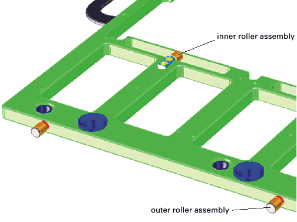
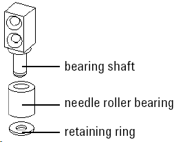
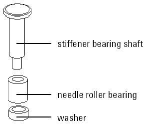

DUT board stiffener roller assemblies
The stiffeners include roller assemblies that are used during the docking process of the DUT board. The inner and outer roller assemblies are shown below.
The threaded end of the bearing shaft mounts the outer roller assembly to the stiffener. The inner roller assembly is attached to the stiffener with two screws.

Inner roller assembly
The bearing shaft for the inner roller assembly is a tempered stainless steel part. Drawing B-E6978-23796 of the bearing shaft shows the mechanical dimensions, machining instructions and tolerances (see Stiffener bearing shaft in Stiffener common parts).
Attach the bearing shaft to the stiffener with M3x12 screws, head type 90° flat Torx. Follow the notes on the drawing's left corner.

The retaining ring (the figure above) is a commercial part (Advantest part number 0510-1665) from any vendor under DIN 6799. The free inner diameter is 3.2 mm.
Outer roller assembly
- Stiffener bearing shaft
The stiffener bearing shaft for the outer roller is a tempered steel part. Drawing B-E7018-237796 of the stiffener bearing shaft shows its mechanical dimensions, machining instructions and tolerances. Follow the notes on the drawing's left corner.
Drill the counter bore for the stiffener bearing shaft carefully to prevent over-tightening of the bearing shaft. Over-tightening restricts free movement of the roller.
- Needle roller bearing
The needle roller bearing (the figure below) is a commercial part (part number 1410-1581). Use of the listed bearing is crucial for the functionality of the stiffener. Use only the listed parts from the original vendors. See Stiffener parts in Commercial parts for vendors and part number.
- Washer
The plastic washer (the figure below) is not a commercial part. Drawing B-E6978-24791 (see Stiffener washer in Stiffener common parts) of the washer shows its mechanical dimensions.

Functional changes
- Introduced before SmarTest 6.3.2